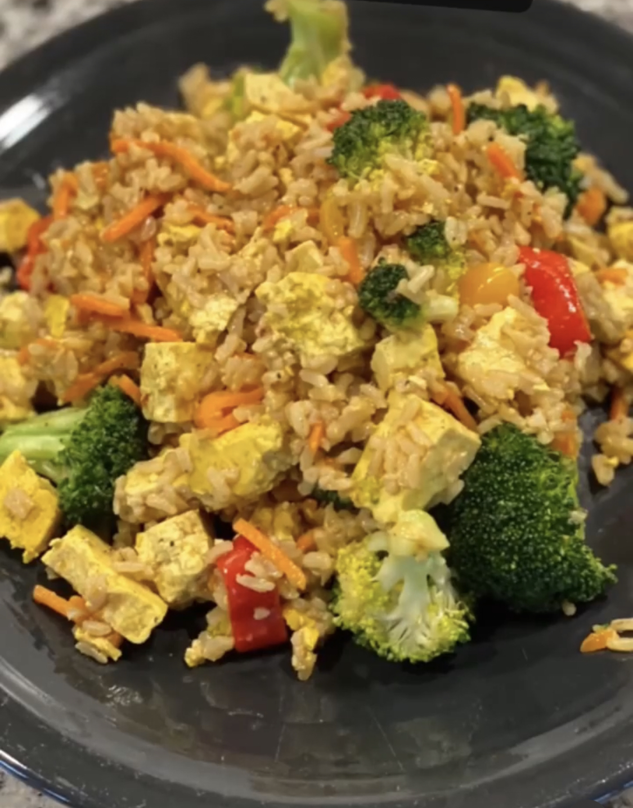

Tofu Fried Rice

This meal will wok your world, bro!
Ingredients:
- 1/2 a block of super firm tofu
- 1 cup of brown rice
- 1/4 small yellow onion
- 1/4 cup of broccoli
- 1/4 cup of shredded carrots
- 1 bell pepper (Your choice in color)
- 1 tsp of sesame oil
- 2 tbsp of Sugar Free Teriyaki Sauce
- 1 tsp of Liquid Aminos
- Garlic Powder
- Onion Powder
- Black Pepper
Steps:
- Boil 2 cups of water in a pot. Add in your rice, lower heat to medium, cover, and simmer
for 10 minutes.
- Heat a wok and add 1 tsp of sesame oil. Chop your tofu and vegetables and then add to
the wok. Cook for 10 minutes.
- Add the brown rice to the wok with your tofu and vegetables. Season and add 1 tsp of
Liquid Aminos and 2 tbsps of Teriyaki Sauce.
- Mix and cook on low heat for 2-3 minutes.
- Serve in a bowl. Optional: Top with sesame seeds and Sriracha.
For maximum results, eat this meal while doing heavy sets of deadlifts!!!